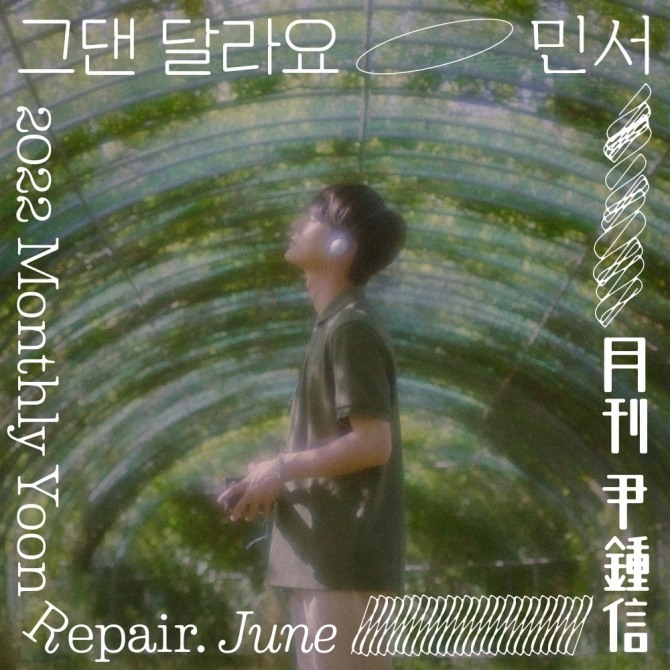
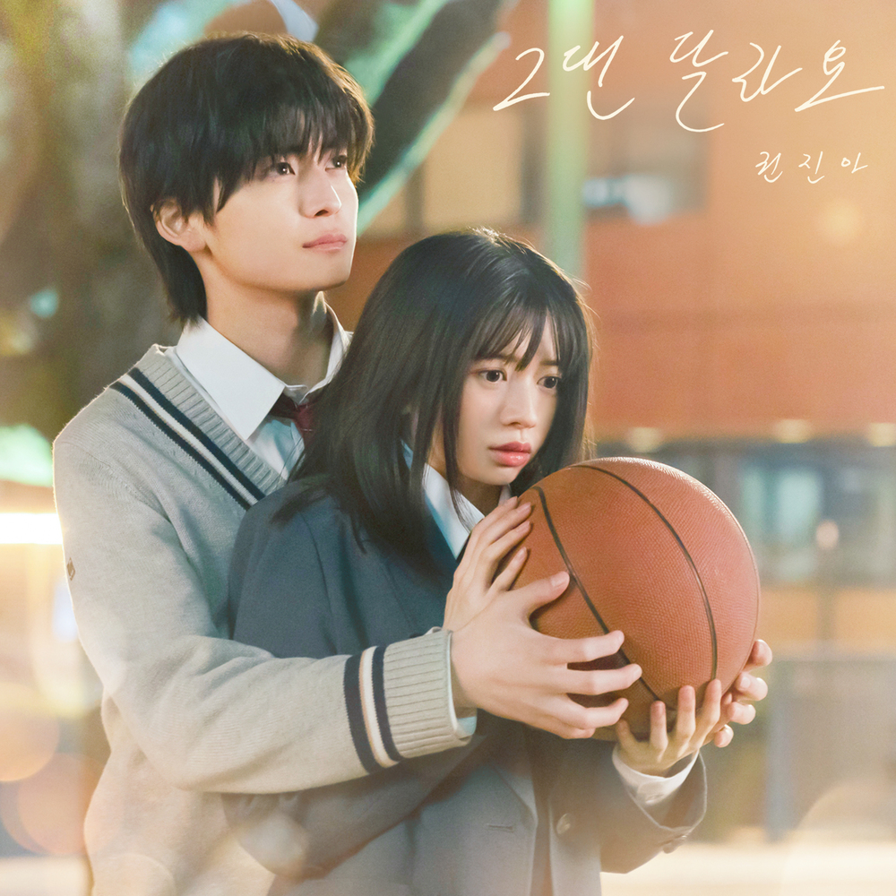

안녕하세요 라보엠입니다.
매달 노래를 발표하는 프로젝트를 하고 있는 가수 윤종신을 정말 존경하고 그의 노래들을 좋아합니다. 가수 윤종신은 MBC 시트콤 논스톱4에서 실용음악과 교수로 출연했었는데요, 한예슬이 밴드부의 보컬로 출연했으며 윤종신 작사, 작곡의 그댄 달라요라는 노래가 많은 인기를 얻었었습니다. 2022년 월간 윤종신 Repair 6월호로 발행되었습니다. 가수 민서가 불러서 한예슬의 원곡과도 다른 느낌을 주었습니다. 2023년 12월에는 권진아가 일본 영화 말하고 싶은 비밀의 한국판 OST 그댄 달라요로 참여했습니다.
권진아 그댄 달라요 - 말하고 싶은 비밀 OST
매달 이렇게 창작물을 낼 수 있다는게 정말 존경스럽습니다. 진정한 아티스트!!
좋니 의 답가 좋아 를 불렀던 민서님께서 불러주셨네요. 한예슬님의 원곡도 좋지만 민서님의 목소리를 좋아해서 애틋한 느낌으로 감상했습니다. 이 노래를 통해 색소폰 연주 멜로우키친을 알게 되었습니다. 멜로우키친은 월간 윤종신 이별하긴 하겠지와 놀면뭐하니 - MSG워너비에도 참여했었습니다.

한예슬 - 그댄 달라요
한예슬 원곡부터 민서, 권진아의 목소리까지 셋다 서로 다른 매력이 있습니다. 저는 멜로우키친의 색소폰이 가미된 월간 윤종신 2022년 6월호 민서 노래 버젼이 가장 좋긴합니다. 인기를 많이 끌었던 원곡과 권진아의 매력적인 목소리도 좋아서 비교하며 들어보셔도 좋을것 같습니다.
그댄 달라요 가사
1.
비교할 수 없는 사랑이
비교할 수 없는 설렘
바로 그대 나에겐 그래요
뭐라고 말하려 해도
바라보다가 건넨 평범한 인사
믿을 수 없이 날 바뀌게 한
아직은 나만의 비밀 그대라는 한 사람
그대는 너무 달라요
내가 본 어느 눈빛보다 날 기대하게 해
언젠가 날 너무나 감동시킬 것 같은
고백이 있을 것 같아 언제부턴가 기다려
그대는 너무 빨라요
날 빠져들게 만든 시간
그댄 날 조급하게 만들었죠
한걸음만 더 내게 다가와 줘
그댄 비밀일 수 없기에
2.
비교할 수 없는 슬픔이
비교할 수 없는 눈물
그대 나를 떠나가는 상상
말없이 떠나가는 걸
잡으려 잡으려고 애를 써봐도
멀어만 지는 그대 꿈들이
깨어나도 힘에 겨운 그대라는 한 사람
그대는 너무 달라요
내가 본 어느 눈빛보다 날 기대하게해
언젠가 날 너무나 감동 시킬 것 같은
고백이 있을 것 같아 언제부턴가 기다려져
그대는 너무 빨라요
날 빠져들게 만든 시간
그댄 날 조급하게 만들었죠
한걸음만 더 내게 다가와 줘
그댄 비밀일 수 없기에
그댄 달라요 내겐
